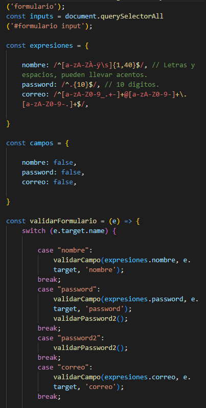
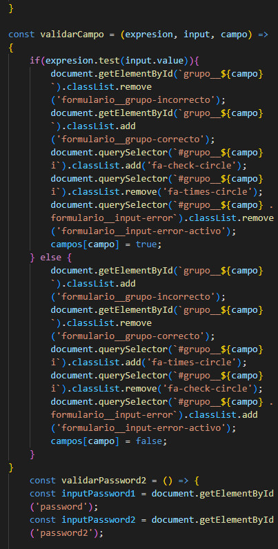
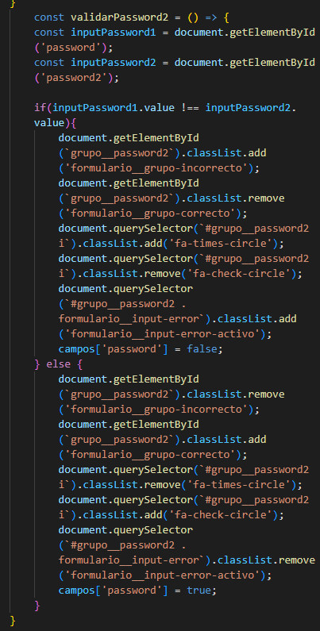

BLOG
IMPORTANCIA DEL FORMULARIO
Las empresas y emprendimientos pueden valerse de este recurso digital como solución rápida, muy económica y fácil de realizar como parte de su gestión. Así mismo, su utilidad radica en acelerar varios procesos que pueden ser molestos, aparte puede ser un formulario muy dinámico, ya que al integrar imágenes y otras herramientas su diseño es más atractivo. Por su lado, puedes emplear aplicaciones o directamente desde el sitio web para que los usuarios puedan llenar los espacios con la información solicitada. En relación con el aspecto de los costos, este tipo de material digital reduce significativamente la inversión porque no es necesario imprimir y distribuir el formulario. Por último, otra gran ventaja de usar este documento de datos de forma digital es que la gran mayoría de la información es fidedigna y confiable porque la probabilidad de error es mínima.
UN POCO DE CODIGO EN JS
Switch en Java. Con el switch se puede hacer un control del tipo if else if… más estructurado pero en realidad no exactamente igual puesto que con el switch lo que se hace es definir un conjunto de casos que van a tener una ejecución distinta y se ejecutará el caso que coincida con el valor indicado en el switch.
If en Java. La estructura condicional más simple en Java es el if, se evalúa una condición y en caso de que se cumpla se ejecuta el contenido entre las llaves {} o en caso de que se omitan se ejecuta el código hasta el primer «;» por lo tanto si no se usan los {} la condición aplica solo a la siguiente instrucción al if.
If else en Java. Con el if solo podemos hacer que se ejecute un fragmento de código o no pero en el caso de que no se cumpla la condición no se hace nada (sigue el flujo normal de ejecución) por lo que si queremos que se ejecute otra cosa cuando no se cumpla la condición solo con el if tenemos que hacer otro con la condición inversa provocando que se tenga que comprobar la condición 2 veces mientras que si usamos el else solo necesitamos hacer la comprobación una sola vez.
  